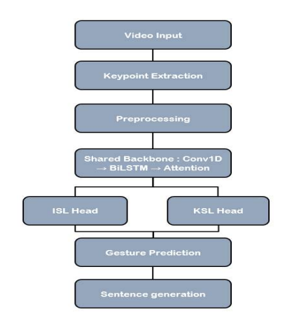
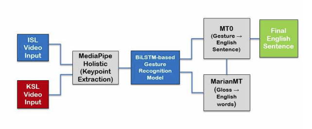
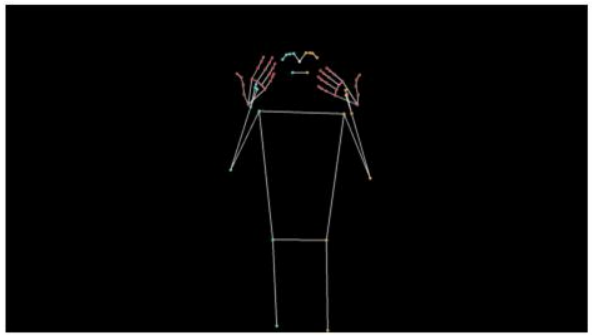
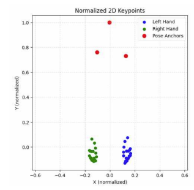
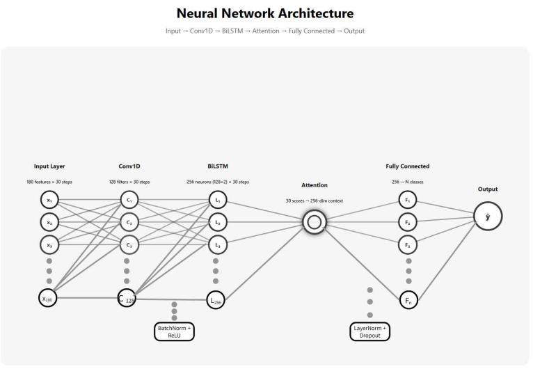
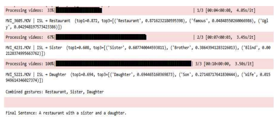

MASTER’S THESIS · BUSAN UNIVERSITY OF FOREIGN STUDIES
SignBridge:
from hand movement to English text
A keypoint-based research prototype that recognizes isolated Indian and Korean sign gestures, then explores turning predicted gesture sequences into short English sentences.
The idea
SignBridge explores a practical path from a short sign-language video to readable English text. The system first predicts isolated gesture labels from body and hand keypoints. A separate language step then turns a sequence of predicted labels into a short sentence.
The work uses two datasets and two separately trained recognizers: one for Indian Sign Language (ISL) and one for Korean Sign Language (KSL). Both use the same Conv–BiLSTM–Attention architecture. The thesis presents a shared-backbone diagram, but its methods say the language-specific models were trained independently; the page describes the implemented training setup.
Thesis: “Multilingual Sign Language Recognition and Sentence-Level Translation Framework Using Convolution–BiLSTM–Attention.”
How a video becomes a prediction
MediaPipe Holistic extracts 2D hand and upper-body landmarks from prerecorded video clips. The pipeline normalizes the landmarks around the shoulders, adds frame-to-frame velocity features, and resamples each clip to 30 frames. This produces a 30 × 180 sequence: 90 position values plus 90 velocity values per frame.
A Conv1D layer extracts local motion patterns, a bidirectional LSTM models movement over time, and temporal attention weights the frames before classification. The ISL and KSL recognizers use the same architecture but are trained separately on their respective datasets.
The thesis reports 264 ISL classes and 402 KSL classes in its dataset summary, with a 70/15/15 train, validation, and test split. It evaluates on prerecorded clips; it does not report a real-time camera evaluation.
From recognized words to a sentence
For KSL, the predicted Korean glosses are translated into English words with MarianMT. ISL labels are already English, so they skip that translation step. The resulting words are then passed to MT0, prompted to compose a short English sentence.
The thesis illustrates examples such as “Restaurant, Sister, Daughter” becoming “A restaurant with a sister and a daughter.” Sentence generation was reviewed qualitatively for fluency, grammar, and relevance; the thesis says it did not compute BLEU or ROUGE because it lacked paired video-to-sentence references.
What the results show
The thesis attributes the higher KSL score in part to its more consistent recording conditions, while the ISL data includes greater variation in lighting, camera angle, and signer style. These figures describe the thesis test splits and are not evidence of performance across all signers or everyday use.
Figures from the thesis
The figures trace the project from landmark extraction through recognition and sentence generation, with test examples and model visualizations.

The diagram summarizes the stages from video to gesture prediction and sentence output. Although it labels the recognition stage as a shared backbone with two heads, the thesis methods specify that the ISL and KSL models were trained independently using the same architecture.

This overview shows how both sign-language inputs enter the keypoint and recognition stages. For KSL, MarianMT converts Korean glosses to English words before MT0 generates a sentence; the thesis says the MarianMT step is skipped for ISL because its labels are already English.

The visualization shows the skeletal representation used instead of feeding full RGB frames to the recognizer. The thesis uses 21 landmarks per hand plus three upper-body anchors, represented as 2D coordinates, to describe each frame.

This plot illustrates the left-hand, right-hand, and pose-anchor coordinates after normalization. Shoulder-centered normalization is intended to reduce the effect of a signer’s position and body scale in the frame; the figure is a preprocessing visualization, not a recognition result.

The architecture diagram shows a 30 × 180 input sequence, a temporal Conv1D layer, bidirectional LSTM features, an attention-weighted summary, and a classification layer. In the thesis configuration, the LSTM has 128 hidden units per direction, producing 256 features at each time step before attention.
This figure isolates the language-generation part of the system: predicted labels are translated from Korean to English when needed, then MT0 is prompted to form a sentence. For ISL, the Korean-to-English translation stage is bypassed.

The sample log shows three predicted gesture labels with their scores, followed by one generated sentence. It demonstrates a qualitative example of the pipeline; sentence outputs were not evaluated with automatic reference-based metrics in the thesis.
Scope and next steps
The thesis identifies important limits: the recognition evaluation uses prerecorded video, omits facial cues, and does not extensively test unseen signers or signing styles. The recognition and sentence-generation stages run sequentially, and the full system was not deployed on an embedded device. Future work includes real-time testing, broader signer coverage, dataset expansion, and feedback from Deaf users.
Thesis record
Master’s thesis, Department of Artificial Intelligence Convergence, Busan University of Foreign Studies.
View the thesis record ↗Recognition: Top 10 finalist, FLY Asia 2024 AI-based Sign Language Interpreter Application.